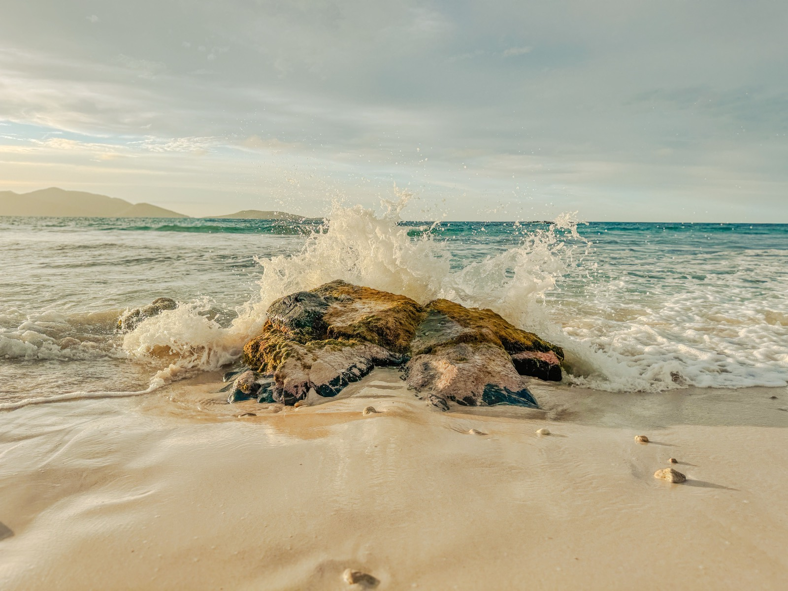

Moving to the British territories
The British Virgin Islands, Anguilla, and Montserrat share English common law, very low crime, and — in two of the three — no income tax at all. But they range from a billionaires' sailing hub to the Caribbean's most affordable safe island. Here's how they compare.

Three small British Overseas Territories share a legal DNA — English common law, English as the working language, British-linked institutions, and crime rates most countries would envy — and then diverge completely on price and personality. The British Virgin Islands is a superyacht-and-offshore-finance hub with no income tax. Anguilla is a flat coral island of famous beaches, luxury resorts, and a bespoke tax-residency program for the wealthy. Montserrat is a near-empty, near-zero-crime volcano island that is among the most affordable places to live safely in the whole Caribbean. Same flag, three very different moves — this guide covers all three.
Do the British Caribbean territories have income tax?
Mostly no — but not universally, so this is worth getting right. The British Virgin Islands and Anguilla levy no personal income tax at all; they fund themselves through payroll taxes, import duties, fees, and consumption taxes instead. Montserrat is the exception: it does levy a modest personal income tax, so it is not a zero-tax island in the way the other two are. On currency, the BVI uses the US dollar, while Anguilla and Montserrat use the East Caribbean dollar (pegged at roughly EC$2.70 to US$1).
The three territories at a glance
| Territory | Population | Character | Cost & who it suits |
|---|---|---|---|
| British Virgin Islands | ~40,000 | World sailing capital and offshore-finance hub — The Baths, Virgin Gorda, no income tax | High cost; high earners and boat people |
| Anguilla | ~15,000 | Flat coral island of famous beaches and luxury resorts — no income tax, a tax-residency program | Most expensive; the wealthy |
| Montserrat | ~4,400 | The "Emerald Isle" — Irish heritage, an active volcano in the south, near-zero crime | Cheapest; budget remote workers & the quiet-seeking |
British Virgin Islands — sailing and finance, at a price
The BVI is the region's yachting mecca (Virgin Gorda's Baths are the postcard) and a major offshore-finance center, which shapes who moves here: high earners, boat crews, and finance professionals. There's no income tax, though a payroll tax applies to employment. Residency is deliberately hard: work permits are employer-driven, and the path to permanent residence and eventual “Belonger” status typically requires around twenty years of residence, with a separate route for major investors. Cost of living is high and hurricane exposure is real (Irma devastated it in 2017), but violent crime is low.
Anguilla — beaches, luxury, and a tax-residency deal
Anguilla is smaller, flatter, and built around some of the Caribbean's best beaches and a high-end resort economy. It levies no income, capital-gains, or inheritance tax, funding itself through duties and a goods-and-services tax. For the wealthy it offers two headline routes: permanent residence via a substantial donation to the island's development fund or a large real-estate purchase; and a “High Value Resident” tax-residency program under which paying a flat annual worldwide-tax amount (on the order of US$75,000) plus owning property above roughly US$400,000 and spending at least 45 days a year on-island makes you an Anguillan tax resident. It's the most expensive of the three and extremely safe.
Montserrat — affordable, empty, and remarkably safe
Montserrat is the outlier and, for many, the most interesting. The Soufrière Hills volcano erupted in 1995, burying the capital Plymouth and forcing an evacuation that cut the population from around 11,000 to a few thousand; a southern exclusion zone remains off-limits, and life has rebuilt in the green north around Little Bay. What's left is a near-empty island with near-zero crime and living costs among the lowest of any safe Caribbean destination. It offers a one-year Remote Worker Stamp for digital nomads, plus property-based and investment residence routes (permanent residence now requires a longer qualifying period than it once did).
What does it cost to live in each?
The spread is enormous. Anguilla sits at the top — a luxury market where two-bedroom rentals commonly run well into the thousands of US dollars a month and a family budget can climb past US$7,000. The BVI is also expensive, driven by imports and its finance-hub economy. Montserrat is at the opposite end: a family can live comfortably on a fraction of the others' budgets, which — combined with the Remote Worker Stamp — makes it a genuinely under-the-radar option for location-independent earners who prize safety and quiet over amenities.
Is it safe to live on Montserrat with an active volcano?
Yes, with an important caveat about geography rather than crime. On crime, all three territories are among the safest places in the Caribbean, and Montserrat in particular has almost none. The volcano risk is confined to the southern exclusion zone, which is closed and monitored; the inhabited north, where the new capital area and community have been built, is considered safe and life carries on normally. You are trading proximity to a monitored volcano for one of the lowest crime environments anywhere in the region.
So which British territory is right for you?
It comes down to budget and what you're optimizing for. High earners who want no income tax and either sailing (BVI) or beaches and a formal tax-residency structure (Anguilla) should look there — accepting some of the region's highest living costs and, in the BVI, a long road to permanent residence. Anyone prioritizing affordability, safety, and quiet — especially remote workers who can use the one-year stamp — should look hard at Montserrat, the rare Caribbean island where “very safe” and “very cheap” overlap. All three give you English law and English-speaking institutions; the price tags could hardly be more different.
Relocating is step one. Owning the home is step two.
SORA designs and builds homes across the tropics — with our deepest roots in Panama and Costa Rica, where residency is straightforward and building costs a fraction of the coastal Caribbean. If your move is really about a place of your own in the sun, it is worth seeing what a fixed-price build looks like before you commit to any one island.
Frequently asked questions
Do the British Caribbean territories have income tax?
The British Virgin Islands and Anguilla levy no personal income tax, funding themselves through payroll taxes, import duties, and consumption taxes. Montserrat is the exception and does levy a modest personal income tax. The BVI uses the US dollar; Anguilla and Montserrat use the East Caribbean dollar.
How do you get residency in the British Virgin Islands?
Most people arrive on an employer-sponsored work permit. Permanent residence and eventual 'Belonger' status typically require around twenty years of continuous residence, with a separate route available for major investors. The BVI's residency system is deliberately restrictive, reflecting its small size and finance-hub economy.
What is Anguilla's tax-residency program?
Under Anguilla's 'High Value Resident' program, paying a flat annual worldwide-tax amount (on the order of US$75,000) plus owning residential property worth roughly US$400,000 or more and spending at least 45 days a year on the island makes you an Anguillan tax resident. Anguilla separately offers permanent residence via a development-fund donation or a large real-estate investment.
Is it safe to live on Montserrat despite the volcano?
Yes. The Soufrière Hills volcano risk is confined to a monitored southern exclusion zone that is closed to residents; the inhabited north of the island is considered safe, and Montserrat has among the lowest crime rates in the Caribbean. It also offers a one-year Remote Worker Stamp and is one of the most affordable safe islands in the region.
Sources & verification
Figures in this guide were checked against primary and authoritative sources on 27 July 2026. Immigration, tax, and cost figures change — always confirm the current rules with the official body or a licensed professional before acting.
- Government of the British Virgin Islands — immigration and residency information
- Government of Anguilla — residency-by-investment and tax-residency (High Value Resident) programs
- Government of Montserrat — Remote Worker Stamp and residence permits